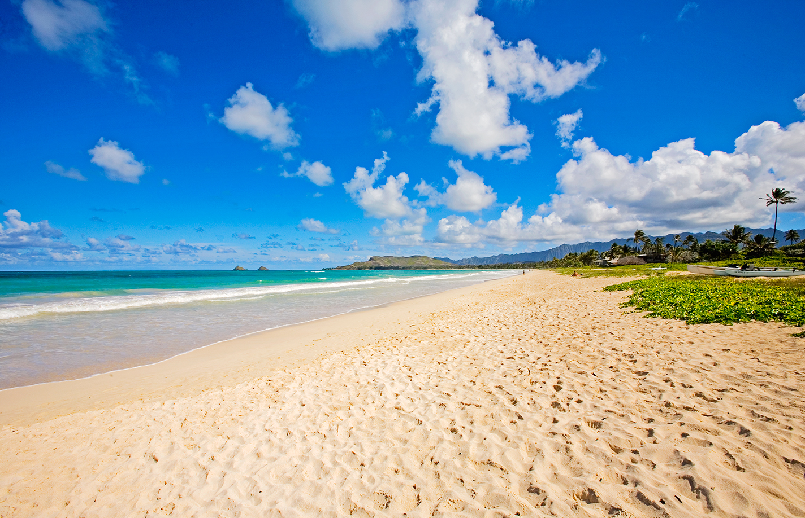

Welcome to Aloha Travel Agency
Lanikai
Nestled in the sleepy beach town of Kailua on Oahu’s Windward side
Lanikai Beach is one of Hawaii’s most picturesque and famous beaches. An offshore reef keeps the water calm year-round, offering excellent swimming conditions from January to December. Less than a mile offshore are two small islands that house bird sanctuaries and those looking for an adventure can easily reach the islands by kayak. Other water sports to enjoy on the clear-blue waters include snorkeling (reef fish and sea turtles are common sights), sailing and windsurfing, while half a mile of fine white sand is the perfect setting for sunbathing. Beachgoers should note that parking is limited, as Lanikai Beach is sandwiched between residential housing.
Sunset
Situated on the historic North Shore of Oahu
Sunset Beach is a beautifully long expanse of beach that has enamored both locals and tourists for decades. During the summer, the blindingly blue ocean waters are calm and crystal-clear, making it the perfect destination for swimmers, snorkelers and families. But as the winter months roll in, so do the large waves, making conditions suitable only for the most experienced of surfers. Surf fans are still welcome to watch pros ride these giants from the safety of the shoreline and take photos of this awe-inspiring natural phenomenon.
Kailua

Located approximately one mile up the road from Lanikai Beach
Kailua Beach Park often is cited as one of Hawaii’s best beaches. In fact, Kailua Beach Park was name “America’s Best Beach” by coastal expert Dr. Stephen Leatherman, aka Dr. Beach, in 1998. With nearly three miles of light-colored sand and crystal-clear water, the park is the perfect spot to spend the day. While many enjoy playing in the gentle waves or learning how to windsurf, the 35-acre beach park also boasts a volleyball court and ample picnic areas where families can relax in the shade with a refreshing treat from local eatery Island Snow, a favorite spot of President Obama.